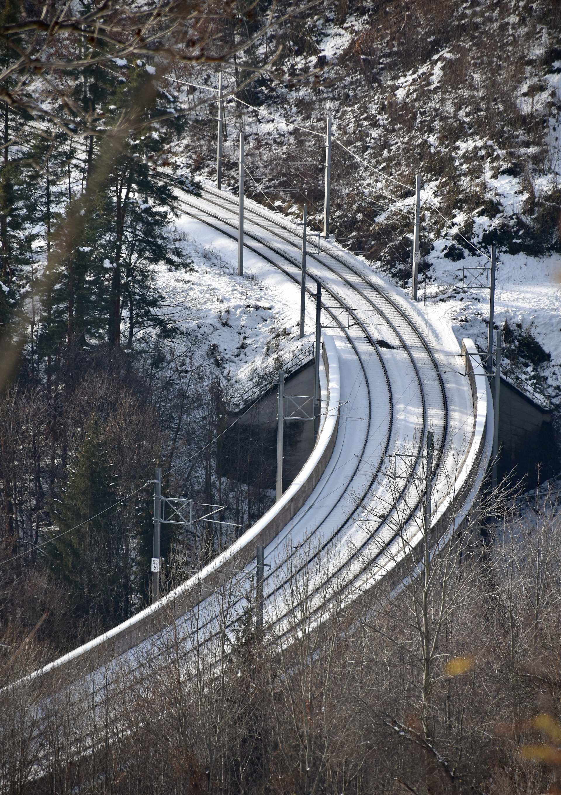
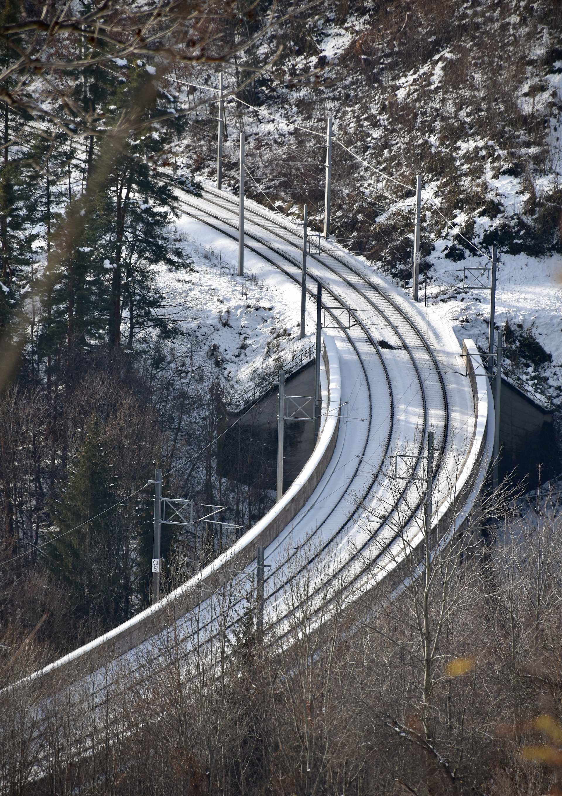

Willkommen am Semmering!
Welkom in het prachtige Semmering, een idyllisch bergdorp gelegen in het hart van Oostenrijk.Deze betoverende bestemming staat bekend om zijn adembenemende natuurlijke schoonheid en historische Semmeringbahn, een van de meest iconische treintrajecten ter wereld.
Een absolute must-see in Semmering is de beroemde Semmeringbahn, een historische spoorlijn die op de Werelderfgoedlijst van UNESCO staat.
Deze schilderachtige treinroute slingert zich een weg door de majestueuze bergen van Semmering en biedt een panoramisch uitzicht op de betoverende landschappen.
Stap aan boord van de nostalgische trein en laat je verrassen door de prachtige uitzichten op groene weiden, dichte bossen en imposante bergpieken.
Voor liefhebbers van wandelen en natuurliefhebbers is de Bahnwanderweg een absolute aanrader.
Deze wandelroute volgt het spoor van de Semmeringbahn en biedt een unieke gelegenheid om de adembenemende omgeving te verkennen.
Geniet van ontspannen wandelingen langs groene valleien, klaterende beekjes en charmante bergdorpjes.
Laat je betoveren door de rust en sereniteit van de natuur terwijl je geniet van de frisse berglucht.
Semmering is niet alleen een paradijs voor treinliefhebbers en wandelaars, maar biedt ook een scala aan andere activiteiten.
In de winter kun je genieten van fantastisch skiën en snowboarden op de perfect geprepareerde pistes.
In de zomer kun je prachtige fietsroutes verkennen, avontuurlijke wandeltochten maken en de lokale cultuur ontdekken tijdens traditionele festivals en evenementen.
Verken het charmante dorp Semmering zelf, met zijn schilderachtige architectuur, gezellige cafés en gastvrije accommodaties.
Proef heerlijke lokale gerechten in de traditionele restaurants en geniet van de warme gastvrijheid van de lokale bevolking.
Of je nu een liefhebber bent van treinreizen, wandelen, skiën of gewoonweg wilt genieten van de prachtige natuur, Semmering biedt een onvergetelijke ervaring voor iedereen.
Kom en ontdek de magie van Semmering en laat je verrassen door de schoonheid van deze unieke bestemming.
 

De treinreis
Om richting Semmering te reizen, heb je de keuze tussen de dag- of nachttrein.Dagtrein
Heenreis:
- Optie 1: vertrek in Brussel om 06:23, aankomst in Semmering om 18:41 na 2 overstappen in Frankfurt am Main en Wien.
- Optie 2: vertrek in Brussel om 08:23, aankomst in Semmering om 21:15 na 3 overstappen in Frankfurt am Main, Wien en Mürzzuschlag.
- Vertrek in Semmering om 09:46, aankomst in Brussel-Zuid om 21:35 na 2 overstappen in Wien en Frankfurt am Main.
Nachttrein
Heenreis:
- Dag 1: vertrek in Brussel-Zuid om 19:32.
- Dag 2: aankomst in Wien met de nachttrein en verdere reis richting Semmering, aankomst om 11:15.
- Deze optie is enkel mogelijk indien u in Brussel vertrekt op maandag, woensdag of vrijdag.
- Dag 1: vertrek in Semmering om 18:46 en verdere reis aan boord de nachttrein richting Brussel.
- Dag 2: aankomst in Brussel-Zuid om 09:55.
- Deze optie is enkel mogelijk indien u in Semmering vertrekt op dinsdag, donderdag of zondag.
€450,- p.p.
Inbegrepen
- Treinreis heen en terug
- 3 overnachtingen ter plaatse
- Ontbijt
- BTW
Optioneel
- Bijstandsverzekering
- Annulatieverzekering
Niet inbegrepen
- Toeristenbelasting
- Waarborgen
- Lokale verplaatsingen
- Lokale activiteiten
- Drank en maaltijden (uitg. ontbijt)
Reisperiode
Deze reis kan gedurende het hele jaar worden gemaakt.
Vertrekdata
Je kan iedere dag vertrekken richting Semmering.
Reisduur
De reis duurt 4 dagen.
In overleg kan de reis worden ingekort of uitgebreid.
Accommodatie
Je verblijft in een hotel op zo'n 650m vanaf het treinstation.
Aangezien de weg richting het hotel bergop is kan er een ophaaldienst worden voorzien.
In uw reisvoorstel ontvangt u een selectie van hotels die wij voorstellen, uit deze lijst kiest u de accommodatie die het beste past bij uw wensen.
Documenten
Voor deze reis volstaat een Belgische identiteitskaart.
Deze reis kan gedurende het hele jaar worden gemaakt.
Vertrekdata
Je kan iedere dag vertrekken richting Semmering.
Reisduur
De reis duurt 4 dagen.
In overleg kan de reis worden ingekort of uitgebreid.
Accommodatie
Je verblijft in een hotel op zo'n 650m vanaf het treinstation.
Aangezien de weg richting het hotel bergop is kan er een ophaaldienst worden voorzien.
In uw reisvoorstel ontvangt u een selectie van hotels die wij voorstellen, uit deze lijst kiest u de accommodatie die het beste past bij uw wensen.
Documenten
Voor deze reis volstaat een Belgische identiteitskaart.
De beschikbaarheid, tijdschema's en tarieven van treinreizen kunnen variëren.
Alle weergegeven prijzen zijn per persoon en op basis van een reisgezelschap van 2 volwassenen.
Alle weergegeven prijzen zijn per persoon en op basis van een reisgezelschap van 2 volwassenen.